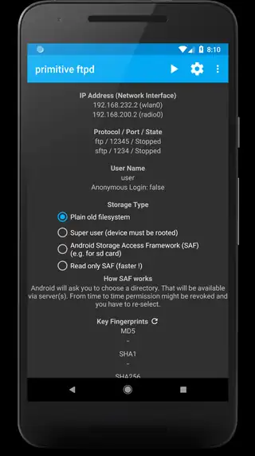
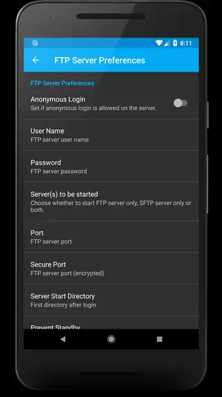

Primitive FTPd
شبكات وملفات
A simple FTP and SFTP (SSH file transfer) server. Allows to exchange files with other machines over WiFi. No more USB cable searching. Runs without root privileges and is not started when device boots: Control yourself when the server runs. However, while it runs it prevents standby to avoid long up
✓ ترخيص مفتوح (Apache-2.0) · آخر تحديث: 2026-07-19
8.2الإصدار
10.7 MBالحجم
Apache-2.0الرخصة
Open in Kanzتحميل APK (10.7 MB)
Download APK
SHA-256: d36566e774e2d0446dcbb41438d22e62d198688aac2711ba7afaa6ea2fdd577d


امسح الكود لفتح صفحة التطبيق
Scan to open this app page
لو كنز مش متثبت عندك: نزّل متجر كنز.
Not installed? Get the Kanz store.